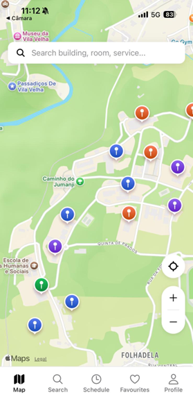
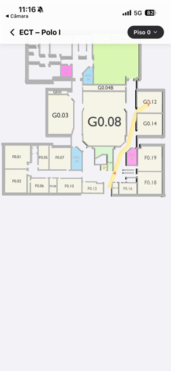
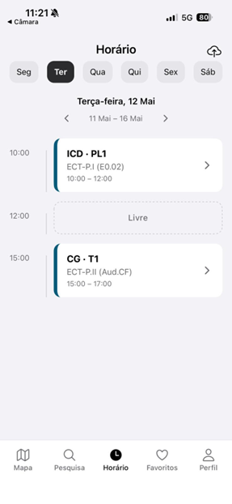
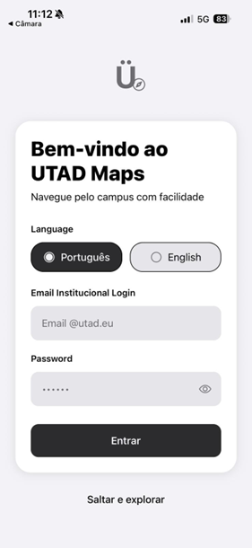

A aplicação UTADmaps tem como objetivo guiar alunos e visitantes pelo campus da Universidade de Trás-os-Montes e Alto Douro, fornecendo mapeamento detalhado das instalações e apoio direto à adaptação académica.
Desenvolvido no âmbito de Interação Pessoa-Computador, o projeto seguiu uma rigorosa metodologia centrada no utilizador. O foco principal esteve no design inclusivo, garantindo total conformidade com as diretrizes de acessibilidade WCAG 2.2, gestão dinâmica de temas e uma aplicação multiplataforma (Web e Mobile Nativo).



